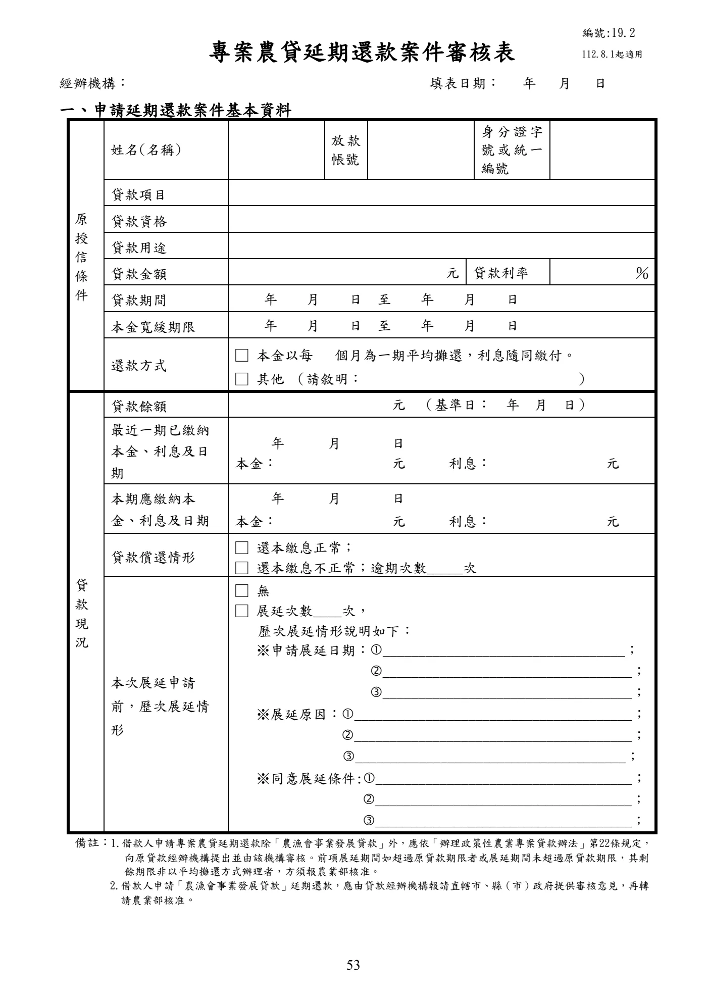

農業發展基金貸款作業規範及相關函釋
手冊頁：53 PDF頁：55／359
{kind=link}

展開查看PDF原始文字層
複雜表格欄列可能因文字層順序失真，請搭配原頁預覽查閱。
專案農貸延期還款案件審核表 經辦機構： 填表日期： 年 月 日 一、申請延期還款案件基本資料 原 授 信 條 件 姓名(名稱) 放款 帳號 身分證字 號或統一 編號 貸款項目 貸款資格 貸款用途 貸款金額 元 貸款利率 ％ 貸款期間 年 月 日 至 年 月 日 本金寬緩期限 年 月 日 至 年 月 日 還款方式 □ 本金以每 個月為一期平均攤還，利息隨同繳付。 □ 其他 （請敘明： ） 貸 款 現 況 貸款餘額 元 （基準日： 年 月 日） 最近一期已繳納 本金、利息及日 期 年 月 日 本金： 元 利息： 元 本期應繳納本 金、利息及日期 年 月 日 本金： 元 利息： 元 貸款償還情形 □ 還本繳息正常； □ 還本繳息不正常；逾期次數_____次 本次展延申請 前，歷次展延情 形 □ 無 □ 展延次數____次， 歷次展延情形說明如下： ※申請展延日期：__________________________________； ___________________________________； ___________________________________； ※展延原因：_______________________________________； _______________________________________； ______________________________________； ※同意展延條件:____________________________________； ____________________________________； ____________________________________； 備註：1.借款人申請專案農貸延期還款除「農漁會事業發展貸款」外，應依「辦理政策性農業專案貸款辦法」第22條規定， 向原貸款經辦機構提出並由該機構審核。前項展延期間如超過原貸款期限者或展延期間未超過原貸款期限，其剩 餘期限非以平均攤還方式辦理者，方須報農業部核准。 2.借款人申請「農漁會事業發展貸款」延期還款，應由貸款經辦機構報請直轄市、縣（市）政府提供審核意見，再轉 請農業部核准。 編號:19.2 112.8.1起適用